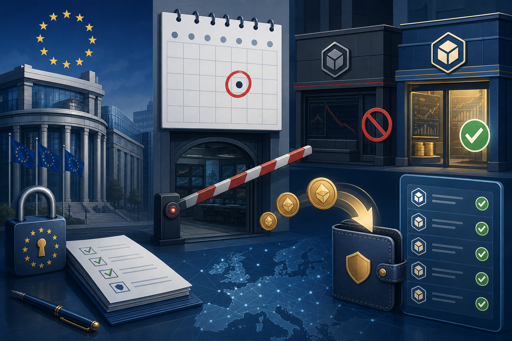
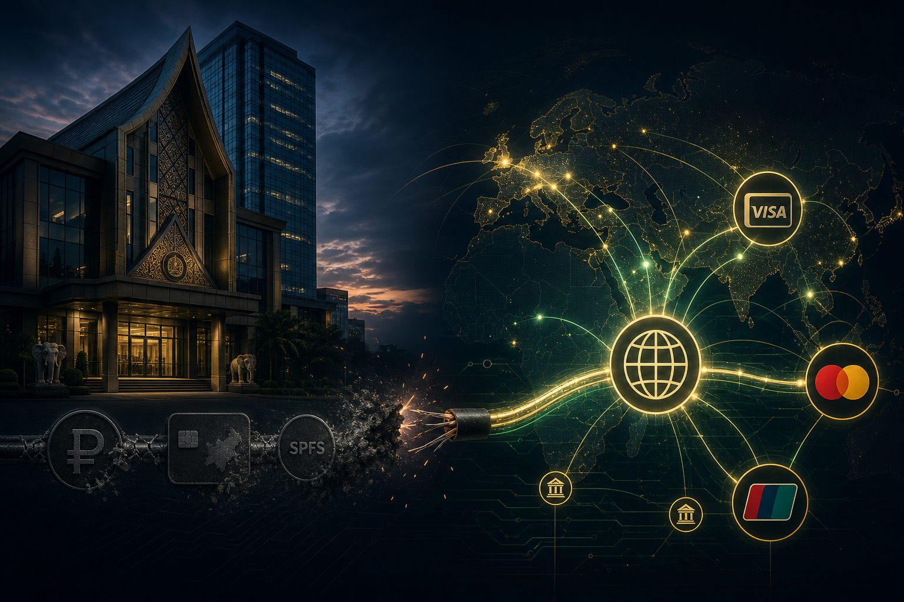
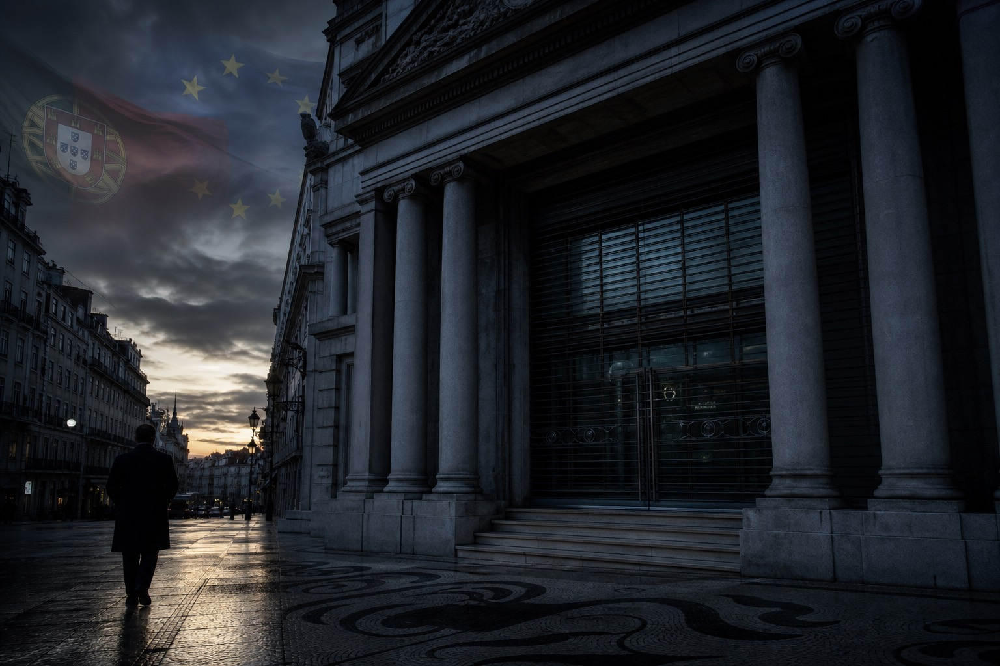
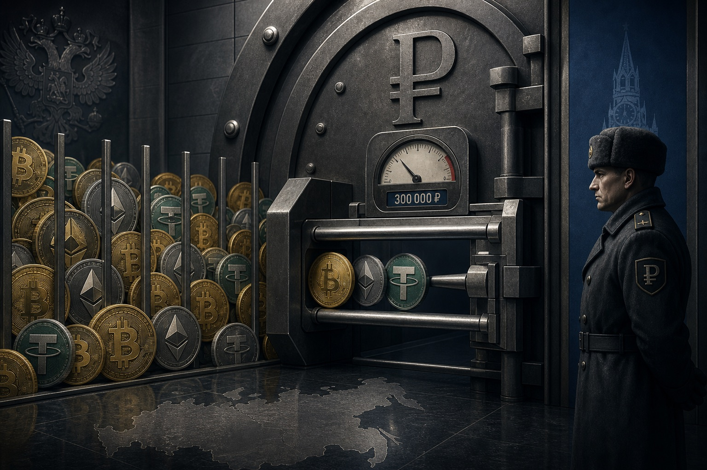
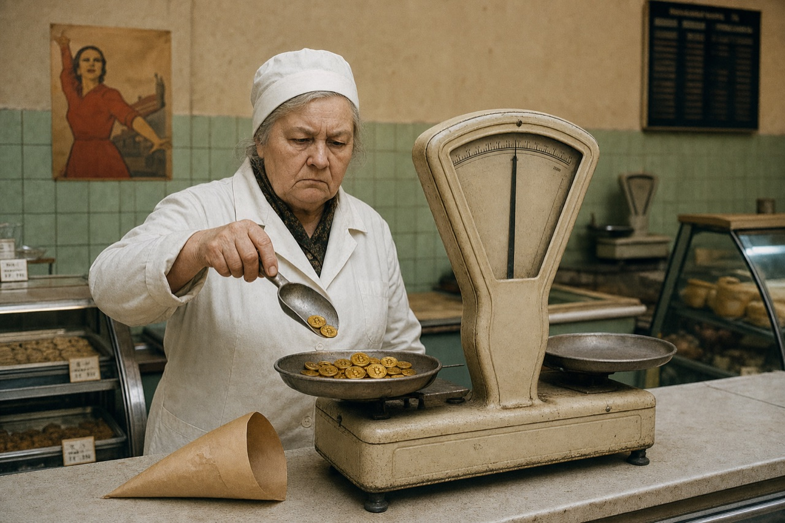

Свежее · Капитал
Капитал2 июля 20269 мин
WP пишет о тревоге элит и слухах об изъятии вкладов (слух, который затем опровергли). Почему «просто перевести и уехать» больше не работает из-за западного комплаенса — и как легально защитить капитал подтверждённого происхождения: структура, юрисдикция, substance, Source of Funds.
Читать материал →

Свежее · Регуляторика / ЕС
Регуляторика1 июля 20268 мин
Переходный период MiCA истёк по всему ЕС. ESMA: без лицензии CASP работать нельзя, продлений нет; лицензию получили лишь ~17% фирм. Чем грозит нарушителям, почему важно знать своё юрлицо, что такое reverse solicitation и запрет B2B-кастоди. Разбор Charter Capital.
Читать материал →
Свежее · Санкции / США
Санкции1 июля 20267 мин
Минфин США открыл онлайн-портал для петиций об исключении из санкционных списков и дал право запросить основания включения («courtesy document»). Не отмена санкций, а прозрачная процедура их оспаривания. Вывод: выигрывает прозрачность, а не сокрытие.
Читать материал →
Налоги / ЕС
Налоги29 июня 20268 мин
Приказ Orden HAC/649/2026 вносит российский режим МХК в специальных административных районах в испанский «чёрный» налоговый список. С конца декабря 2026 — усиленный контроль и проверки происхождения средств. Решает структура и чистая история капитала.
Читать материал →
Регуляторика / ЕС
Регуляторика28 июня 20268 мин
Крупнейшая биржа не получила лицензию MiCA ни в одной стране ЕС и с 1 июля сворачивает услуги: новые сделки, депозиты, регистрации и Earn — стоп, вывод остаётся. Причина — «fit and proper» к CZ. Урок: биржа — контрагент, а не сейф.
Читать материал →

Свежее · Санкции / ВЭД
Санкции / ВЭД27 июня 20268 мин
Лаосский JDB разорвал связи с РФ: НСПК, «Мир», СПФС, рубли и крипта — всё отключено, плюс отказ от схем «в партнёрстве с JDB». На фоне совместного гида OFAC и OFSI — урок: серые агентские каналы и экзотические банки ненадёжны.
Читать материал →
Россия / Стейблкоины
Регуляторика25 июня 20269 мин
Доклад Банка России на консультациях: спецрегулирование выпуска рублёвых стейблкоинов под ВЭД — эмитенты только банки и SPV, обеспечение 1:1, реестр ЦБ. Внутри страны запрет. Альтернатива санкционно-уязвимым USDT/USDC.
Читать материал →
Россия / Крипта
Регуляторика23 июня 20268 мин
Полная идентификация участников крипторынка, travel rule и контроль операций от 1 млн ₽. Расчёты по импорту в крипте сохраняются, но становятся полностью прозрачными для контролёров.
Читать материал →
 Свежее · Таиланд
Свежее · Таиланд
Аналитика22 июня 20268 мин
Можно ли иностранцу владеть бизнесом и отелем в Таиланде? Да — через BOI, тайскую компанию с контролем или FBL. Номиналы незаконны. Барьер не во владении, а в визе LTR — и вилла засчитывается в инвест-ценз.
Читать материал →
Свежее · США / Стейблкоины
Регуляторика18 июня 20267 мин
FinCEN, ФРС, OCC, FDIC и NCUA обязывают эмитентов платёжных стейблкоинов (включая USDC) вести идентификацию клиентов по Bank Secrecy Act. Вместе с MiCA это закрывает «анонимный» стейблкоин по обе стороны Атлантики.
Читать материал →
Сегодня · MiCA
Регуляторика16 июня 20267 мин
Переходный период MiCA заканчивается 1 июля без продлений. Лицензию CASP получили лишь ~17% компаний, USDT убран с бирж ЕС, легальны USDC и EURC. Почему это закрывает «серые» крипторельсы для капитала из СНГ.
Читать материал →
Сегодня · Санкции UK
Регуляторика16 июня 20267 мин
70 новых санкций UK: пять банков (включая «Яндекс Банк» и WB Bank), Росгосстрах, Balance Insurance и платёжная сеть A7. Заморозка активов и запрет корреспондентских отношений. Почему удар сместился на повседневные рельсы капитала.
Читать материал →

Сегодня · Банки ЕС
Регуляторика15 июня 20266 мин
Принудительное закрытие с 14.08.2026 — под удар не только без ВНЖ, но и часть резидентов. Что делать с деньгами и как открыть запасной счёт заранее.
Читать материал →
Сегодня · Санкции ЕС
Регуляторика15 июня 20266 мин
Теневой флот (9 человек, 45 компаний), ПФКИ и блогеры, дело Навального. Впервые под санкции — публичная компания из КНР. Почему под ударом транзитные хабы ОАЭ/Турции/Гонконга.
Читать материал →
Сегодня · Крипто РФ
Регуляторика15 июня 20266 мин
Легальный P2P, порог 3,5 млн ₽ для обменников, майнинг физлиц, задержка 48 ч. 7 смягчений — и почему внутренняя легальность ≠ банкуемость капитала за рубежом.
Читать материал →

Сегодня · Крипто 2026
Регуляторика10 июня 20265 мин
Неквалам — до 300 тыс. ₽ и пять монет; при этом USDT, USDC и BNB власти сами считают рискованными. Комиссии до 3%, период охлаждения, барьеры на вывод. Почему это сигнал для движения капитала.
Читать материал →
 Новое · Санкции ЕС 2026
Новое · Санкции ЕС 2026
Регуляторика9 июня 20266 мин
Инсайд о возможном 21-м пакете (не подтверждено официально): KuCoin, MEXC, Bitget, BingX — высокий риск; OKX, Gate, ByBit — зона MiCA. Диверсификация кастодиального риска и подготовка off-ramp без паники.
Читать материал →
Новое · Налоги
Налоги и структуры8 июня 20267 мин
Миф о «нулевом налоге» в Гонконге стоит бизнесу замороженных счетов и доначислений по 16,5%. Презумпция налогообложения IRD, бремя доказательства offshore-прибыли, режим FSIE и substance — и почему дешёвый офшор больше не спасает крупный капитал.
Читать материал →
Новое · Продукт
Продукты8 июня 20266 мин
Платный отчёт о готовности капитала к проверке банком, регулятором и судом: карта капитала, индекс готовности 0–100 по девяти измерениям, красные флаги и дорожная карта. Зачем это нужно и кому подходит.
Читать материал →
Свежее · Инфраструктура 2026
Инфраструктура / ВЭД4 июня 20268 мин
Западное облако и поставщики GPU закрылись для бизнеса из СНГ — отказы карт, де-рискинг, экспортный контроль. Легальный контур: аренда и закупка через компанию в Гонконге или Сингапуре, оплата USD/CNY/USDT, закрывающие документы. Сервис Charter Cloud и роль Charter Capital.
Читать материал →
Свежее · Санкции 2026
Санкции / Крипта3 июня 20267 мин
США внесли в чёрный список крупнейшие криптобиржи Ирана. Стейблкоины замораживают, биржи блокируют целиком, блокчейн прозрачен — «анонимного» капитала не существует. Что делать с выводом капитала из СНГ.
Читать материал →
Свежее · Бизнес в ЕС 2026
Аналитика3 июня 20267 мин
«Золотые визы» закрылись, ЕС требует substance — реальный бизнес. Действующий бизнес даёт его сразу, но узкое место не объект, а приём капитала из СНГ западным банком. Как пройти путь спокойно.
Читать материал →

Свежее · Крипто 2026
Аналитика2 июня 20268 мин
Закон № 1194918-8 открывает легальную покупку крипты. Но ЦБ режет банкам лимит до 1% капитала и риск-вес 1250% из-за «риска блокировки». Что это значит для Source of Funds и вывода капитала.
Читать материал →
Свежее · Валютный контроль 2026
Аналитика2 июня 202612 мин
Любое расхождение между контрактом и платежом ФНС квалифицирует как незаконную операцию: штраф 20–40%. Пять чек-листов, чтобы найти «красные флаги» до проверки.
Читать материал →
 Свежее · Комплаенс 2026
Свежее · Комплаенс 2026
Регуляторика31 мая 20267 мин
Statrys обновила FAQ: ОАЭ, Ближний Восток, Кипр, BVI, Турция и СНГ — в стоп-листе. Связка «РФ — фризона Дубая — Гонконг» больше не работает.
Читать материал →
Свежее · География капитала
Аналитика30 мая 20268 мин
Доход легальный, человек не под санкциями — а банк отказывает «по профилю». Как вернуть капиталу проверяемую биографию: доказывать, а не прятать.
Читать материал →
Частный банкинг
Частный банкинг28 мая 20266 мин
$2,9 трлн в Гонконге за 2025 (BCG). Швейцария на втором месте. Конец эпохи нейтралитета и новая архитектура легитимности для HNWI / UHNWI.
Читать материал →
Регуляторика
Санкции / P2P26 мая 20266 мин
Британия внесла в чёрный список HTX, EXMO, Bitpapa, банки в Кыргызстане и Грузии. $1,5 млрд оборота. Что это значит для P2P и цены USDT.
Читать материал →
 Аналитика · B2B
Аналитика · B2B
ВЭД / B2B26 мая 20267 мин
Чистый американский USDC для B2B-расчётов в Китае / ОАЭ / ЕС: как обойти «географический след» и закрывать ВЭД-контракты без вторичных санкций.
Читать материал →
Аналитика
UK / комплаенс16 мая 20268 мин
Look-Through и loan-back typology: почему Lombard с Карибов не закрывает вопрос SoW для Tier-1 в Лондоне.
Читать материал →
 Аналитика
Аналитика
Family Office02 мая 20269 мин
VCC, Section 13O/13U и прямой канал к Private Banking — когда классические офшоры перестают работать в онбординге.
Читать материал →
 Аналитика
Аналитика
AML / SoF15 мая 20267 мин
Кейс Charter Capital: заморозка после SoW из‑за триггера на платёж $60 двухлетней давности — и зачем нужен институциональный контур.
Читать материал →
Кейс
Банкингскоро
Полный таймлайн кейса без имён — что сработало, что нет, и где была реальная развилка.
Читать кейс →
 Аналитика
Аналитика
AML / SoFскоро
Шаблоны формулировок и подтверждающих документов, которые ждут comply-офицеры.
Читать материал →
Риски
Off-rampскоро
Чего не хватает в стандартном пакете и как выглядит «правильный» off-ramp в 2026.
Читать материал →